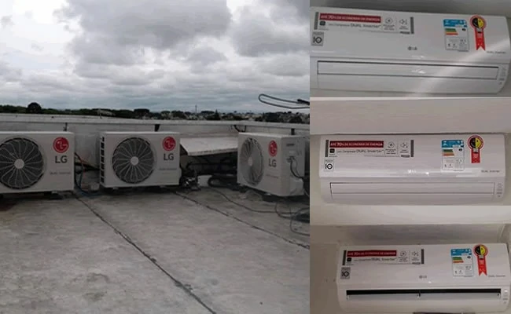

"Chamei eles para uma limpeza no ar condicionado, eles são nota mil, parece novo, equipe show. Super indico."
Luciane Pereira - Posto Aladin
Climátis Ar Condicionado e Refrigeração
Instalação, manutenção e PMOC de ar-condicionado em Curitiba
Atendimento técnico para residências, comércios e empresas, com garantia, equipe qualificada e soluções de manutenção inteligente.
12 meses de garantia na instalação
Equipe técnica qualificada
Curitiba e região metropolitana

Atendimento residencial, comercial e industrial
Instalação, manutenção, higienização, refrigeração comercial e PMOC ar condicionado Curitiba.
Diagnóstico inteligente
Simular meu ambiente
Não sabe qual ar-condicionado escolher?
Responda algumas perguntas rápidas e descubra a capacidade ideal em BTUs, o tipo de equipamento recomendado e uma estimativa inicial para instalação.
Serviços técnicos
Ar condicionado em Curitiba com atendimento completo
Serviços para conforto, desempenho, economia de energia e conformidade dos sistemas de climatização.
 Instalação de ar-condicionado
Projeto, infraestrutura e instalação com materiais adequados e garantia.
Instalação de ar-condicionado
Projeto, infraestrutura e instalação com materiais adequados e garantia.
 Manutenção preventiva
Rotinas para reduzir falhas, preservar rendimento e prolongar a vida útil.
Manutenção preventiva
Rotinas para reduzir falhas, preservar rendimento e prolongar a vida útil.
 Manutenção corretiva
Diagnóstico técnico e reparos em equipamentos de diferentes marcas e modelos.
Manutenção corretiva
Diagnóstico técnico e reparos em equipamentos de diferentes marcas e modelos.
 Higienização
Limpeza técnica para melhorar a qualidade do ar e remover sujeira acumulada.
Higienização
Limpeza técnica para melhorar a qualidade do ar e remover sujeira acumulada.
 PMOC
Plano de manutenção, operação e controle para empresas e ambientes climatizados.
PMOC
Plano de manutenção, operação e controle para empresas e ambientes climatizados.
 Refrigeração comercial
Manutenção em freezers, máquinas de gelo e climatizadores comerciais.
Refrigeração comercial
Manutenção em freezers, máquinas de gelo e climatizadores comerciais.
SmartCool
PMOC Inteligente com tecnologia e dados
Além da manutenção preventiva obrigatória, a Climátis oferece soluções de acompanhamento técnico, relatórios, histórico de atendimentos e análise de dados para ajudar empresas a reduzir falhas, economizar energia e manter os equipamentos em conformidade.
Conhecer o SmartCool
Confiança técnica
Por que escolher a Climátis
Uma empresa de Curitiba criada em 2014, com atendimento próximo, valor justo e compromisso com qualidade.
Garantia na instalação
12 meses de garantia para instalação de ar-condicionado novo.
Equipe qualificada
Técnicos capacitados em ar-condicionado, refrigeração e elétrica.
Residencial, comercial e industrial
Atendimento para casas, condomínios, lojas, clínicas, escritórios e empresas.
Credenciamentos e parceiros
Credenciamentos Gree, Hitachi e Trane, além de clientes como Annalab, HP Dental e KTR do Brasil.
Instalamos e fazemos manutenção preventiva e corretiva de todas as fabricantes.

"Profissionais nota 10. Recomendo pela seriedade no trabalho, profissionalismo, competência e preço justo."
Kátia Yamamoto - Sushi Yama"Serviço rápido e ágil. Ficou muito bem instalado e funcionando 100%. Indico com certeza."
Wallace - Wal Mar
Curitiba, região metropolitana e litoral do Paraná
Chamar no WhatsApp
Precisa instalar, limpar ou fazer manutenção de ar-condicionado em Curitiba?
A Climátis combina atendimento técnico, orientação clara e soluções para manter seu ambiente confortável, seguro e eficiente.